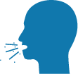

Comment se protéger et protéger les autres au quotidien ?
 Lavez-vous trés réguliérement les
mains
Lavez-vous trés réguliérement les
mains Portez un masque si vous êtes
malade
Portez un masque si vous êtes
malade
 Saluez sans serrrer la main,
n'embrassez personne
Saluez sans serrrer la main,
n'embrassez personne
 Evitez les rassemblements
Evitez les rassemblements
 Evitez de toucher les yeux, la bouche
et le nez
Evitez de toucher les yeux, la bouche
et le nez
Tousser ou éternuez dans votre
coude ou dans un mouchoir